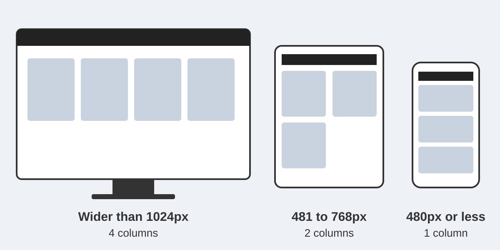

Resize the browser window to see the layout change

On a wide desktop, I am in a 4-column grid. Between 769 and 1024px the grid has 3 columns, on tablet 2, and on phone I take full width.
Media queries let us redefine the grid at every breakpoint.
This approach uses pure CSS, no framework needed.
Added for Exercise 1. Above 1024px all four cards fit in one row.